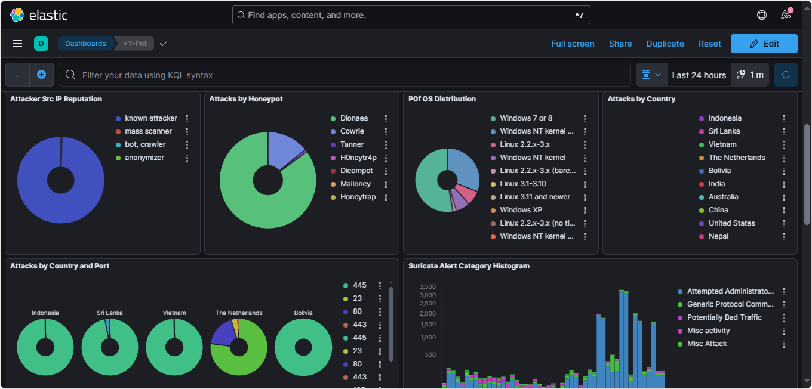

Traditional enterprise network security struggles against evolving cyber threats like polymorphic malware and zero-day exploits, as existing tools are often reactive and require manual intervention. Honeypots offer a proactive defense by luring attackers to decoy systems, enabling observation of their techniques without risking real assets.
AI-Powered Honeypots
The Future of Enterprise Network Defense
Background
Objectives
This research proposes integrating honeypots with AI in a virtualized network environment (using EVE-NG, real-world simulation tools, and Kali Linux). This combined approach allows an AI agent to learn from attacker behavior observed via honeypots and automatically mitigate threats in real time, moving beyond the limitations of passive monitoring. Our study does not aim to analyze advanced persistent threats (APTs), encrypted traffic analysis, or enterprise-grade SIEM systems.
Research Workflow
- Design and implement a virtualized network with typical corporate components (DMZ, servers, switches, routers, user computers).
- Deploy honeypots capable of capturing malicious behavior across different network zones.
- Simulate realistic attacks using Kali Linux and Parrot OS attack engines.
- Collect and label attack data using honeypot logs and analyze attack behavior patterns.
- Train an AI agent to recognize these patterns.
- Develop an automated response engine that can isolate malicious nodes, modify firewall rules, or raise alerts in real-time.
- Evaluate the performance of the AI agent using standard security metrics (accuracy, precision, false positives).
How It Works

Our system is built on a realistic, virtual enterprise network architecture designed to mimic the infrastructure of a small-to-medium business. This includes segmented zones such as an internal LAN for simulated employee systems, a DMZ hosting public-facing services, dedicated attacker zones running Kali and Parrot OS, and a centralized firewall for traffic control. Within this environment, we deployed two key honeypots: Cowrie, which emulates SSH/Telnet services and captures brute-force login attempts and shell commands, and Dionaea, which listens for malware uploads and exploitation attempts on vulnerable ports. All logged activity from these honeypots is funneled into the ELK Stack (Elasticsearch, Logstash, Kibana), enabling centralized, real-time visibility into attack behaviors.
The core intelligence of the system is the AI engine, which is trained on real honeypot logs to identify malicious sessions based on behavioral features like login frequency, command complexity, and session duration. This forms a closed-loop security system that functions autonomously: it detects incoming threats through honeypot interactions, decides the severity using AI classification, takes action by instantly blocking attackers via dynamic firewall rules, and continues to learn from each event to improve its accuracy over time. This loop transforms traditional reactive security into a proactive, self-defending mechanism — operating faster and smarter than manual intervention.
Tools and Platforms Used
| Tools/Platforms | Purpose |
|---|---|
| EVE-NG | Virtualization platform for the network lab |
| Cowrie | Open-source low interaction SSH/Telnet honeypot |
| Python (Scikit-learn, TensorFlow) | Implement AI |
| Kali / Parrot OS | Pre-installed penetration testing tools |
| Nmap, Metasploit, Hydra | Attack simulations tools |
| Dionaea | Malware collector / HTTP, SMB exploitation honeypot |
| ELK Stack | Centralized, scalable log management with GUI |
| iptables | Scriptable and easy to manipulate by AI agent |
| Snort, custom scripts | Real-time response |
Real Attacks Simulated
🟡SSH brute-force 🟡Malware uploads 🟡SQL injection 🟡Reverse shell execution 🟡DoS attempts
Results
The results of our research demonstrate the effectiveness of combining honeypots with AI to create an autonomous cybersecurity system. Our AI model, trained using behavioral data from Cowrie and Dionaea honeypots, achieved over 90% accuracy in classifying malicious sessions. Compared to traditional signature-based IDS like Snort, our system detected a wider range of threats, including stealthy attacks such as reverse shells and low-frequency probing. The average response time for automated threat mitigation was just 5.3 seconds, significantly faster than manual analysis. This rapid detection and response reduced potential damage and prevented lateral movement within the network. Even in complex, multi-stage attack simulations, our system accurately flagged malicious behavior and initiated appropriate defenses in real time. These results validate the power of AI-driven honeypot architectures for scalable, real-world threat defense in enterprise environments.
-
✅
Detection Accuracy:
AI Model (Random Forest) achieved over 90% accuracy.
Outperformed traditional IDS tools (e.g., Snort) on stealthy attacks. -
⚡
Response Speed:
Average AI-based threat response: ~5 seconds
Human analyst reaction (manual): 30+ seconds
Academic Contribution
This research makes a meaningful academic contribution by bridging the gap between passive honeypot systems and intelligent, automated threat prevention. We designed and implemented a hybrid architecture that integrates behavioral honeypots with supervised machine learning, enabling real-time threat classification and autonomous response. Unlike traditional IDS solutions, our approach focuses on extracting and analyzing behavioral features—such as command entropy and login frequency—directly from attacker interactions. Additionally, we demonstrated how a fully virtualized lab using open-source tools like EVE-NG, Cowrie, and Dionaea can serve as a cost-effective yet powerful testbed for cybersecurity research. Our work offers a scalable, replicable framework for future studies in AI-driven network defense.
Future Directions
Future work will focus on enhancing the system’s adaptability and scalability by incorporating deep learning models like LSTM to better analyze sequential attacker behavior over time. We also plan to implement online learning, allowing the AI to continuously retrain on new data without manual intervention. Expanding attack simulation to include encrypted and polymorphic threats will further improve robustness. Additionally, integrating threat intelligence feeds can enable more context-aware responses, while containerizing the system will support deployment in edge environments or resource-constrained networks. These advancements aim to evolve our prototype into a more resilient, real-time defense solution suitable for dynamic enterprise settings.
- 🧠 Deep learning models (e.g., LSTM) for sequential behavior detection.
- 🔄 Online learning from new attack data.
- 🌐 Integration with threat intelligence feeds.
- 📦 Edge deployment via containerization.